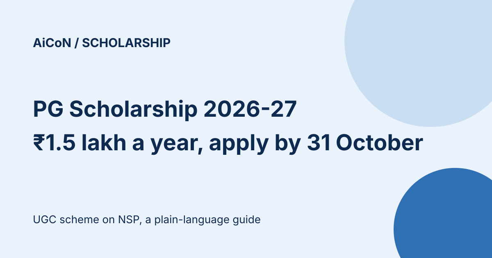

PG Scholarship 2026-27: ₹1.5 lakh a year for 2 years, apply on NSP by 31 October
UGC's National Scholarship for Post Graduate Studies gives ₹15,000 a month for 10 months a year (₹1.5 lakh a year) for two years. There are 10,000 slots a year and the NSP FAQ says there is no income limit. Applications for 2026-27 are open on the National Scholarship Portal (NSP) until 31 October 2026.

What does it give?
The UGC page lists ₹1,50,000 per annum for 2 years, and the NSP FAQ explains this as ₹15,000 a month for 10 months. It is paid by Direct Benefit Transfer to an Aadhaar-seeded bank account. Renewal for the second year needs a renewal application on NSP.
Who can apply?
| Course | First year of a regular, full-time PG degree at an eligible institute with an AISHE code. For integrated courses, the scholarship covers the PG part only. |
|---|---|
| Age | Below 30 on the date of admission to the first semester or year. |
| Income | The NSP FAQ says there is no income criterion. |
| Not eligible | Anyone who already holds a PG degree, distance, open or part-time students, and anyone already on another scholarship. |
Key dates on NSP
| Scheme open | 16 September 2026 |
|---|---|
| Student application | Until 31 October 2026 |
| Institute verification | Until 15 November 2026 |
| District, state or ministry verification | Until 30 November 2026 |
How are awardees picked?
The NSP FAQ says selection is purely on merit, with slots allocated under Government of India reservation policy. 30% of slots are reserved for women, filled first by single, twin or fraternal girl children without considering their UG marks. Half of the slots are for arts, humanities, social sciences, law and management, and half for science, engineering, medical, technical, agriculture and forestry. The guideline says ties are broken using UG marks, then Class XII marks.
A careful checklist
- Generate your One-Time Registration (OTR) on scholarships.gov.in using Aadhaar.
- Apply under National Scholarship for Post Graduate Studies and submit before 31 October 2026.
- Ask your institute to verify the application before 15 November 2026.
- Make sure your bank account is seeded with Aadhaar.
We did not log in or apply. We read the NSP scheme list, the UGC scheme page, the NSP FAQ and the scheme guideline PDF (2023-24 edition).
Frequently asked questions
Can I get this and another scholarship?
No. The FAQ says a student can avail only one scholarship at a time.
What is a single girl child?
The only girl child in the family with no siblings. A girl who is one of twin or fraternal daughters is also eligible. One daughter with a brother does not count.
Sources: NSP scheme list, UGC scheme page, NSP FAQ, scheme guideline (2023-24 edition). Checked 10 October 2026. This is an AiCoN explainer, not a government publication.